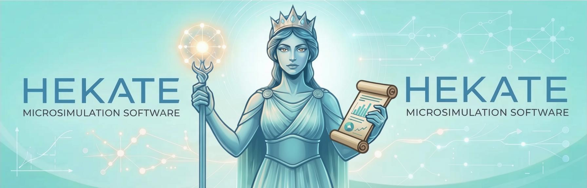

Hekate — Microsimulation Engine
Named after the Greek goddess of crossroads, magic, and transitions, Hekate is a self-contained, dynamically configurable demographic microsimulation system written in Go. Hekate is a general-purpose microsimulation engine that can simulate population dynamics including migration, aging, mortality, fertility, and other demographic processes. The name reflects the engine's purpose—guiding populations through the crossroads of life events and demographic transitions.
If you've used NetLogo, you already understand Hekate's philosophy: